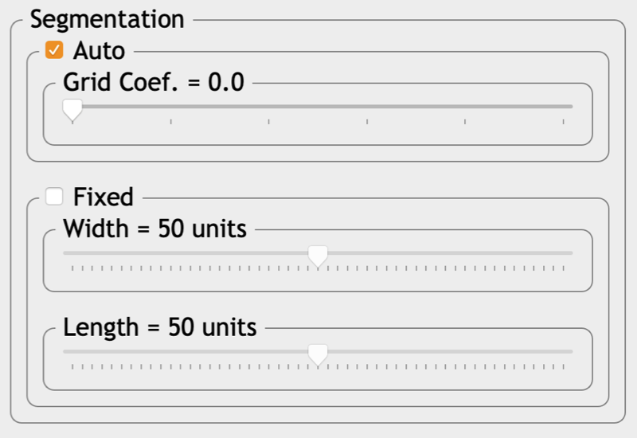
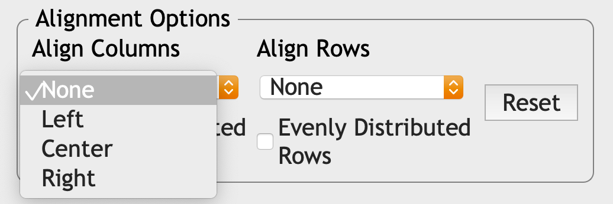
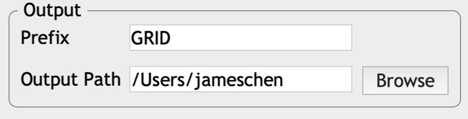

1.5 Finalize plot’s boundaries

GRID will detect the border automatically for each plot. Users in this panel can finalize the borders and export the results.

Border detection (auto): Grid coefficient is a way to tune the weights between two strategies: With a smaller coefficient, GRID will tend to explore the adjacent pixels from the center and expand the border as much as possible. Whereas with a larger coefficient, GRID will consider how far the expanded border from the central point. The further the distance is, the less chance GRID will continue to explore the adjacent area.
Border detection (manual): Instead of detecting borders automatically, the size of borders can also be adjusted into a fixed size. It assumes that every plots are in the same size

- Alignment: Rows and columns of plots can be aligned vertically or horizontally. It’s like the way how you arrange objects in Microsofts Word or PowerPoints. GRID also allows users to allocate the plots in the equal distance.

- Output: In this section users can name the prefix for the output files.
Cursor mode (right click to switch between each mode):
Border refine: In this mode, users can refine the individual’s border by left-click dragging
Column-wise adjustment: An entire column can be moved horizontally through left-click dragging
Row-wise adjustment: An entire rows can be moved vertically through left-click dragging